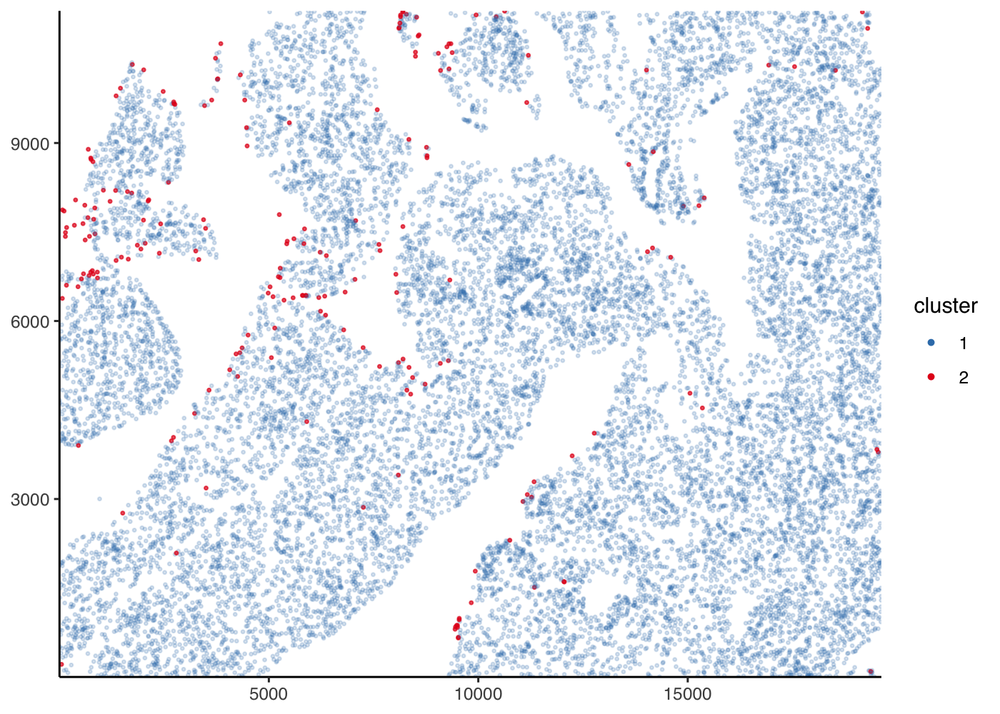

The goal of PackageBluishgreen is to package the internals for clustering cells for Olesja Popow (pronounced “po-pow”). The cells were identified using the TUNEL algorithm which output DAPI and FITC values for each cell into a CSV. This package takes these outputs and clusters them by their FITC intensity.
This package is still under development and the API may change.
Installation
You can install the released version of ‘PackageBluishgreen’ from GitHub with:
#> If using 'renv'
renv::install("Kevin-Haigis-Lab/PackageBluishgreen")
#> else
devtools::install_github("Kevin-Haigis-Lab/PackageBluishgreen")Example
This is a basic example with some data from a lung slide.
library(PackageBluishgreen)
lung_data <- system.file(
"extdata",
"unmicst-OP1165_liver_TUNEL_01.csv",
package = "PackageBluishgreen"
) %>%
readr::read_csv(col_types = readr::cols()) %>%
janitor::clean_names() %>%
select(
cell_id,
x = x_centroid,
y = y_centroid,
dapi = dapi_nuclei_mask,
fitc = fitc_nuclei_mask,
area:orientation
)
head(lung_data)
#> # A tibble: 6 x 12
#> cell_id x y dapi fitc area major_axis_leng… minor_axis_leng…
#> <dbl> <dbl> <dbl> <dbl> <dbl> <dbl> <dbl> <dbl>
#> 1 1 20775. 5.19 14990. 29994. 117 15.2 10.3
#> 2 2 36155. 54.6 16403. 15586. 95 13.5 9.07
#> 3 3 36103. 70.5 28111. 2954. 359 27.2 17.3
#> 4 4 35866. 69.2 14360. 35306. 249 32.1 9.99
#> 5 5 36045. 76.5 27555. 9761. 277 21.4 16.5
#> 6 6 36004. 83.2 32704. 2969. 824 35.0 30.0
#> # … with 4 more variables: eccentricity <dbl>, solidity <dbl>, extent <dbl>,
#> # orientation <dbl>
lung_slide <- tissue_slide(lung_data)The slide can store metadata, too. It can be added to the slide when it is instantiated with tissue_slide() using the metadata parameter or can be added to an existing tissue slide object using set_slide_metadata()
lung_slide <- set_slide_metadata(lung_slide, list(tissue = "lung", mouse = "OP24"))
get_slide_metadata(lung_slide)
#> $tissue
#> [1] "lung"
#>
#> $mouse
#> [1] "OP24"
plot_tissue(lung_slide, color = log10(fitc))
plot_density(lung_slide, value = fitc)
lung_slide <- cluster_manually(lung_slide, fitc, cutoff = 4, transform = log10)
plot_slide_clusters(lung_slide)
summarize_cluster_results(lung_slide)
#> # A tibble: 2 x 2
#> manual_cluster n
#> * <fct> <int>
#> 1 1 153258
#> 2 2 19132